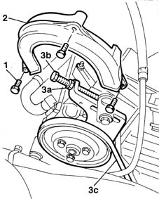

1092C10 power steering and/or self-levelling suspension pump drive belt - r + r
- Path
- Procedures > 10 ENGINE UNIT > 1092 VARIOUS ENGINE COMPONENT CONTROLS > 1092C power steering/self-levelling suspension pump drive > 1092C10 power steering and/or self-levelling suspension pump drive belt - r + r
- Kind
- repair procedure (removal / refitting; the operation number is the code)
- Applies to
- engines: 1.6 16v; all production periods
- Interactive page
- https://sloeber94.github.io/elrnDB-fMltpl/en/#/2891345
Applies to: engines: 1.6 16v; all production periods
 Removing
Removing
 Refitting
Refitting1092B50 alternator/air conditioner compressor drive belt - adjust tension
1. Undo the belt plastic guard retaining bolts.
2. Remove the power steering pump belt guard.
3. Unscrew nut (3a) and adjustment screw (3b) to slacken belt tension. Then remove belt (3c).

Applies to: engines: 1.6 16v; all production periods
Refitting
RemovingCheck belt condition.
Replace the belt if necessary.
Fit a new belt over the pulleys.
Tighten belt tension by adjusting the nut and adjustment screw.
1092C12 power steering pump drive belt - adjust tension
Fit the power steering belt guard.
1092B50 alternator/air conditioner compressor drive belt - adjust tension
Topics linked from this page (2)
- 1092B50 alternator/air conditioner compressor drive belt - adjust tension
- 1092C12 power steering pump drive belt - adjust tension